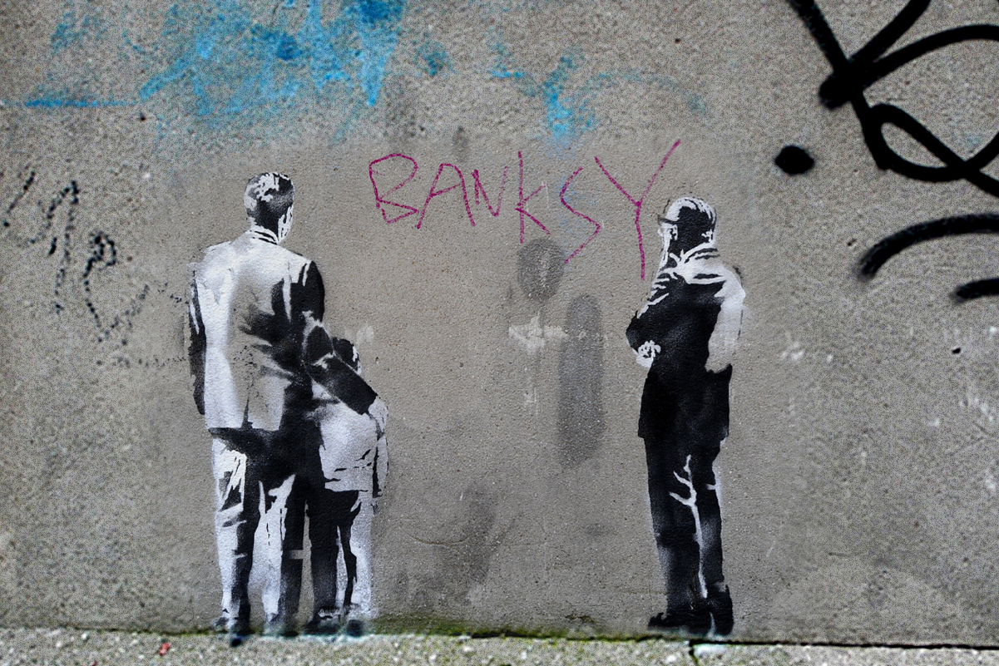

Design like you give a damn!
Design like you give a damn!
Cross-Government Design meeting, 2016
@LeonieWatson
Two words
Government Accessibility
Design like you're Banksy

"Read the rule book, then rip it up and create something that challenges the accepted wisdom"
Digital revolution
- Create a single domain website
- Provide a single consistent experience
- Make it open, efficient and effective
Alpha objectives
- Openly test a prototype website
- Build with open standards and agile methodologies
- Design based on user's needs
Alpha outcomes
Within two months:
- 100,000 people visited the prototype
- 1,000 gave structured feedback
- 3,000 gave feedback on Twitter
Alpha accessibility
Of the top 10 issues reported by users:
- Accessibility was 5th
- Colour contrast was 10th
Beta objectives
"We want to make the most easy to use, accessible government website there has ever been. Merely ticking a box marked ‘accessible’ isn’t enough."
Beta design principles
"Accessible design is good design. Everything we build should be as inclusive, legible and readable as possible. If we have to sacrifice elegance — so be
it."
Beta responsibility
We made accessibility everyone's responsibility
Beta accessibility
- Provided accessibility settings
- Made 16pt the default text size
- Simplified the language
- Reduced content quantity
Gov.UK objectives
- Keep iterating, changing and challenging
- Keep testing, refining and improving
Design like you're Da Vinci

"Be curious about everything, and never stop questioning how you can make things better"
Accessibility people
- Bring people with accessibility experience into your team
- Be that person
Agile testing
- Make accessibility part of every user story
- Build accessibility checks into every sprint
Conformance testing
- Carry out WCAG conformance checks
- Do it at least twice (during beta and before go-live)
Accessibility testing
- Test with older and disabled people
- Choose people from your target audience
Rinse and repeat
Continue agile, conformance and accessibility testing throughout the service lifetime
Design like you're Chanel
"Strive for beauty and elegance, but understand that those things will not be the same for everybody"
Screen reader experience
Software that converts on-screen content into synthetic speech or refreshable Braille
Content navigation (headings)
Content navigation (landmarks)
Content navigation (links)
Content interaction (forms)
DOM tree

Accessibility tree

Platform Accessibility APIs
- Windows: MSAA UIAutomation IAccessible2
- Mac OS: NSAccessibility Protocol
- Linux: IAccessible2 ATK/AT-ASPI
- iOS: UIAccessibility
- Android: Accessibility Framework
Platform controls

- Role is "checkbox"
- Accessible name is "Bold"
- State is focused, checked, focusable
Web control
<input type="checkbox" for="bold">
<label for="bold">Bold</label>
- Role is "checkbox"
- Accessible name is "Bold"
- State is focused, checked, focusable
HTML Accessibility API Mappings (AAM)
The relationship between platform objects and web objects is documented in the HTML AAM
Design like you're Brunel
"Know that planning is important, but that imagination makes the extraordinary possible"
Imagine if...
- Tim Berners-Lee hadn't imagined the web
- Martha Lane-Fox and Tom Loosemore hadn't imagined Gov.UK
Imagine if...
- Accessibility wasn't an afterthought
- Or worse, not thought about at all
Imagine if...
- If we challenge the accepted wisdom on accessibility
- If we were curious about how we can make accessibility better
Imagine if...
What a difference we could make if we design like we give a damn!